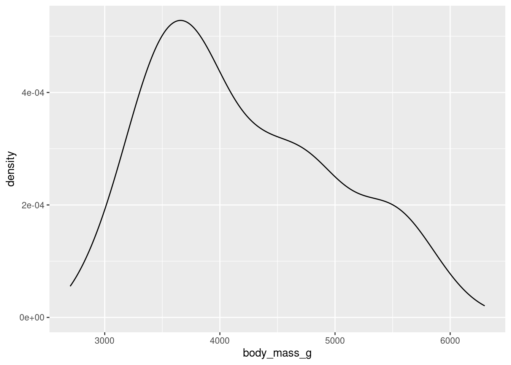
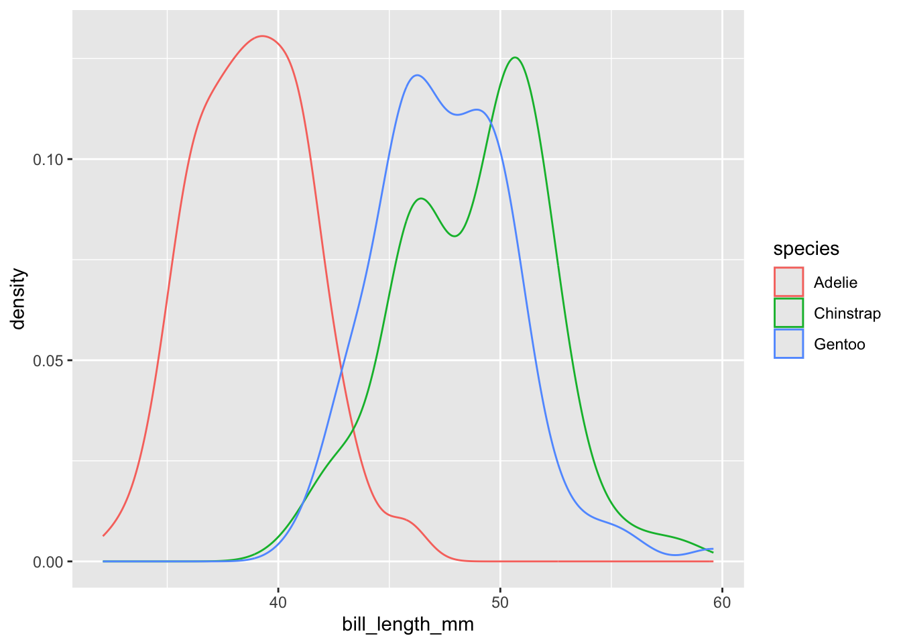
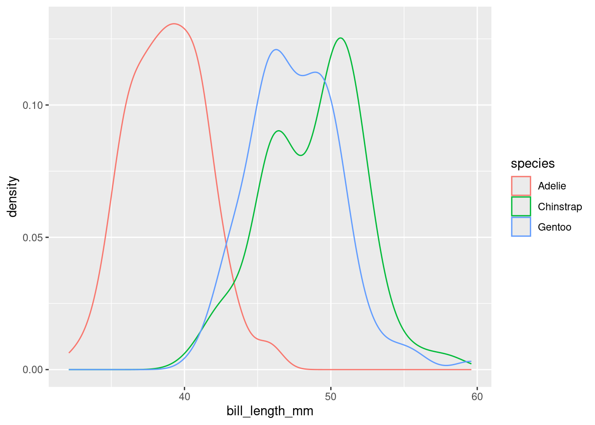
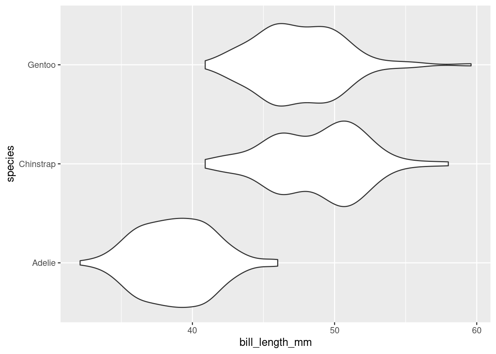
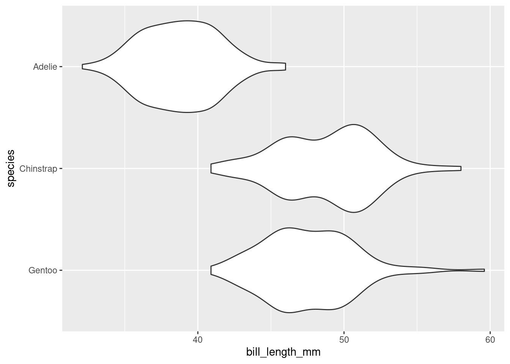

library(tidyverse)
library(stat20data)Summarizing Numerical Data
Seeing the forest for the trees.
Once you have your data in front of you, you’ve seen how we can form visual summaries with ggplot2. But how can we calculate numerical summaries? Furthermore, what if we are concerned about summarizing a portion of our data, like just one species of penguin at a time? We will answer these questions below, and introduce some new functions from the dplyr package (within the tidyverse library) along the way. We’ll also look at how factor() can come in handy while plotting.
If you are playing along in RStudio while reading these notes (which we strongly recommend!), be sure to start off by loading the two packages that are necessary for the tutorial by running the following code.
Calculating Numerical Summaries
One example of a numerical variable we could have examine is the body mass of a particular penguin (measured in grams). Let’s calculate both a measure of center and spread for this variable.
To get an idea of what summaries we should pick, let’s revisit the density plot from earlier.

What we can glean from this figure is that the distribution of body masses across all species of penguin is skewed right. This means that, for instance, a more typical observation lies closer to 4000 grams than 5000 grams.
If we take an average, it is likely to be pulled to the right by the larger, but less typical, observations. The median observation, however, would be more resistant to this pull. Therefore, the median might be a nice choice for a measure of center. Similarly, since the IQR is initially constructed from the median, it will serve well here as a measure of spread.
Now, let’s calculate these values. We should first isolate our variable of interest. We can do this in code by using the dplyr function select().
body_mass <- select(penguins, body_mass_g)
body_mass# A tibble: 333 × 1
body_mass_g
<int>
1 3750
2 3800
3 3250
4 3450
5 3650
6 3625
7 4675
8 3200
9 3800
10 4400
# ℹ 323 more rowsAs is custom with dplyr functions, the first argument goes to the data frame you are working with. The following arguments are more function specific. In select()’s case, we tell the computer which column/variable we are interested in.
Now, we can calculate our summaries. When working with a vector, we could use functions like mean() and median() directly, e.g. median(body_mass_g). However, body_mass_g is not a standalone vector but is now a column in a data frame called body_mass! Therefore, we need to access it through a dplyr function called summarise().
summarise(body_mass,
body_mass_median = median(body_mass_g),
body_mass_IQR = IQR(body_mass_g))# A tibble: 1 × 2
body_mass_median body_mass_IQR
<int> <dbl>
1 4050 1225Note that while the first argument goes to the name of the data frame, the following arguments are given to the names of the new columns that summarise() puts in another new data frame (one row by two columns). You can name the columns whatever you would like.
Based on what we’ve found, the median here supports the claim we made above: that a typical penguin has a body mass closer to 4000 grams than to 5000 grams. The middle 50 percent of the penguins have body masses within 1225/2 grams, or roughly 600 grams, of 4050.
Groupwise Operations
Let’s return to the bill length examine of a particular penguin, measured in millimeters. Here is the density plot for all of the data; for simplicity, earlier we showed you the plot for only the first 16 observations.

This plot is interesting. It appears we have a bimodal shape! While it’s tempting to state that the data is roughly symmetric and calculate an overall mean, we should first see if there are any other variables at play. It stands to reason that different species of penguin might have different anatomical features. Let’s add species to the mix by using the color aesthetic (see if you can code along)!

Aha! We now see that each penguin species has its own shape of distribution when it comes to bill length.
The example above demonstrates a very common scenario: you want to perform some calculations on one particular group of observations in your data set. But what if you want to do that same calculation for every group? For example, what if we’d like to find the average and standard deviation of bill length among each species of penguin separately?
This task - performing an operation on all groups of a data set one-by-one - is such a common data science task that nearly every software tool has a good solution. In the dplyr package, the solution is the group_by() function. Let’s see it in action.
grouped_penguins <- group_by(penguins, species)Like most tidyverse functions, the first argument to group_by() is a data frame. The second argument is the name of the variable that you want to use to delineate groups. In this case, we want to group by species to calculate three separate mean/standard deviation pairs.
Now, assuming we roll with our new grouped_penguins data frame, we can use summarise() like we did before!
summarise(grouped_penguins,
bill_length_mean = mean(bill_length_mm),
bill_length_sd = sd(bill_length_mm))# A tibble: 3 × 3
species bill_length_mean bill_length_sd
<fct> <dbl> <dbl>
1 Adelie 38.8 2.66
2 Chinstrap 48.8 3.34
3 Gentoo 47.6 3.11From both the visuals and the numbers, we can see that Adelie penguins have much smaller bill lengths on average when compared to Chinstrap and Gentoo penguins. We also see that the Adelie distribution of bill lengths is less variable than the distributions of the other two species.
Plotting with Categorical Variables
Finally, let’s return to the violin plot of bill lengths grouped by species of penguin.

What if I wanted the Adelie violin to show up on the top of the graph? By default, the violin plot puts the level first in the alphabetical order on the bottom of the plot. Therefore, I need to reorder the levels of species to put Adelie at the top. This is where factor() will do the job!
As before, bill_length_mm is not a standalone vector but a column in a data frame! We cannot access it directly, e.g. by factor(species, levels = c("Gentoo", "Chinstrap", "Adelie")).
Therefore, we use the dplyr function mutate(). A mutation involves changing the properties of an existing column, or adding a new one altogether (which we will explore next week).
reordered_penguins <-
mutate(penguins,
species =
factor(species, levels = c("Gentoo", "Chinstrap", "Adelie")))The first argument of mutate() is dedicated to our data frame, penguins. The second argument can be the name of an existing column or the name of a new column (next week). We want to change species to be an altered version of itself, hence we name the second argument species. Make sure you understand where each set of parentheses closes and ends.
Now, assuming we roll with our new reordered_penguins data frame, we can use ggplot() like we did before!

Summary
A summary of a summaries…this better be brief! Summaries of numerical data - graphical and numerical - often involve choices of what information to include and what information to omit. These choices involve a degree of judgement and knowledge of the criteria that were used to construct the commonly used statistics and graphics.